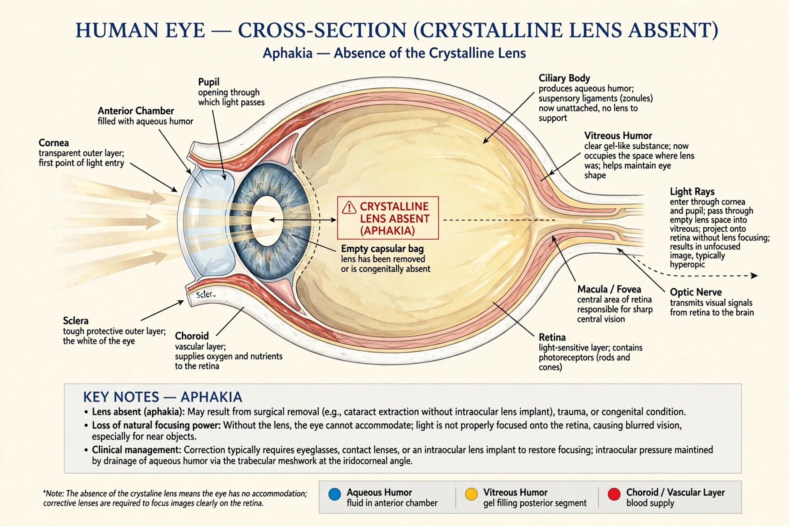

Aphakia is the absence of the lens of the eye, due to surgical removal, such as in cataract surgery, a perforating wound or ulcer, or congenital anomaly. It causes a loss of ability to maintain focus (accommodation), high degree of farsightedness (hyperopia), and a deep anterior chamber. Complications include detachment of the vitreous or retina, and glaucoma.

| Aphakia | |
| Specialty | Ophthalmology |
|---|---|
| Symptoms | Severe farsightedness, loss of accommodation |
| Causes | Cataract surgery, trauma, congenital absence/dislocation of the lens |
| Treatment | Intraocular lens implant, contact lenses, thick corrective glasses |
Because the lens contributes roughly a third of the eye's refractive power, its absence leaves the eye highly hyperopic — typically around +10 to +12 diopters. Aphakic eyes cannot accommodate, so near vision is blurred without correction. The pupil appears jet black, the anterior chamber is deepened, and the iris may tremble with eye movement (iridodonesis) because it has lost the support of the lens.
The most common cause is surgical removal of a cataractous lens without implantation of an artificial lens — standard practice before modern intraocular lenses became routine in the 1980s. Other causes include traumatic dislocation or expulsion of the lens, spontaneous absorption (as in some congenital syndromes), and rare primary congenital aphakia.
Modern management usually involves implantation of an intraocular lens (IOL), either at the time of cataract surgery or as a secondary procedure. Where surgery is not possible, aphakia can be corrected with high-power contact lenses or thick "aphakic" spectacles, which produce magnification and a restricted visual field (the so-called jack-in-the-box phenomenon).